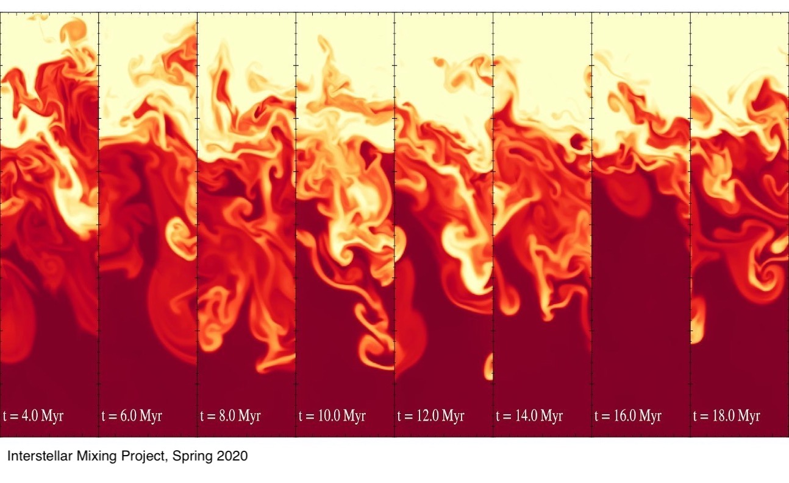
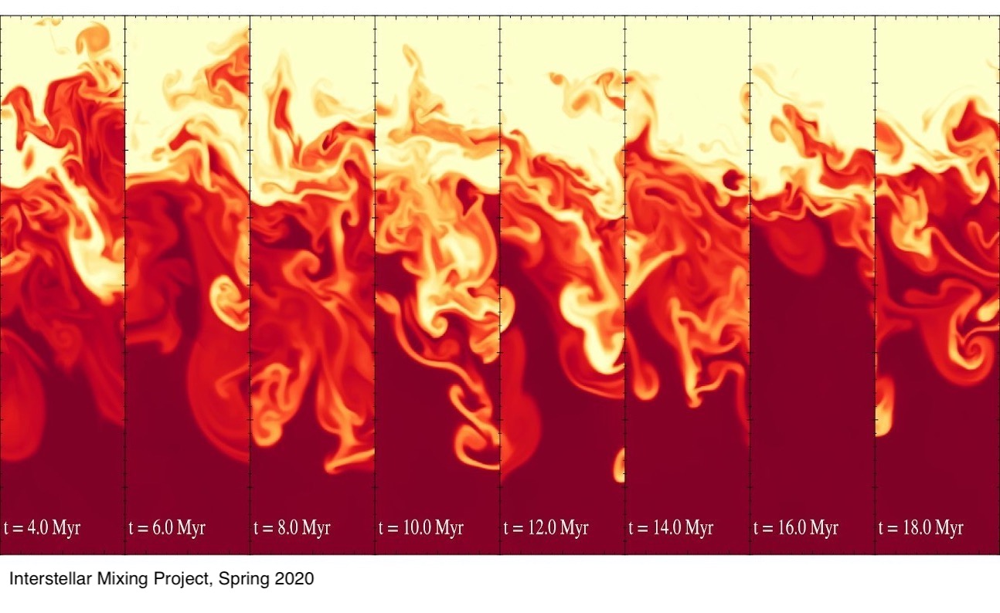

I study Physics and Astronomy.
I am an undergraduate student in the Departments of Physics and Astronomy at the University of California, Berkeley. I use computer simulations to understand the Universe.
I work with Yuan Li (now at University of North Texas) who is a part of Eliot Quataert's (now at Princeton) group within the Theoretical Astrophysics Center at UC Berkeley. My latest project has been simulating thermal instabilities in the ISM to quantitatively identify differences in various cloud characteristics.
I also work with Eugene Chiang who is a part of the Department of Astronomy and Department of Earth and Planetary Science at UC Berkeley. My latest project has been determining the spin axes of gravitational instability fragments within protoplanetary disks.
I also enjoy tutoring and mentoring students. From 2018 to 2020 I worked as a mentor for the student run ULab: Undergraduate Laboratory @ Berkeley within the Physics and Astronomy Lab. My group of students for the 2018-2019 academic year built muon detectors and collected data on muon incident angles at various altitudes. My group for the 2019-2020 year simulated the Kelvin Helmholtz Instability to study mixing layers in the ISM.
 
